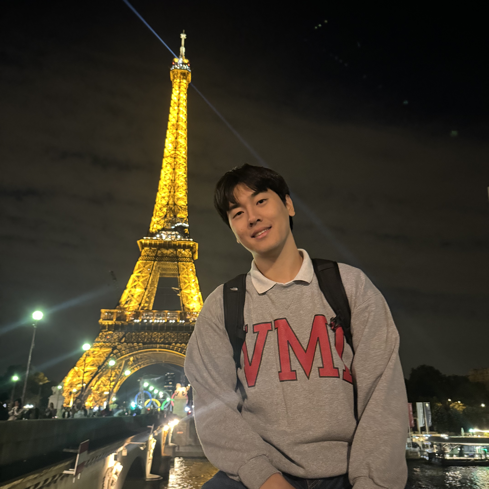

Younghan ParkI am an undergraduate student majoring computer science at Yonsei University. My long-term research goal is to build machines that can perceive, understand, and use language in a human-like way. My current areas of interest are:
Email: younghanpark [at] yonsei [dot] ac [dot] kr |
 |
Yonsei University, Seoul, South KoreaB.S. in Computer Science, Mar 2020 - Present |
The University of Texas at Austin, Austin, Texas, United StatesExchange Student in Computer Science, Aug 2023 - May 2024 |
NLP and Computational Linguistics Group, The University of Texas at AustinUndergraduate Research Intern, Aug 2023 - Present Advisors: Prof. Eunsol Choi, Prof. David Harwath |
Multimodal AI Lab, Yonsei UniversityUndergraduate Research Intern, Feb 2023 - Aug 2023 Advisor: Prof. Youngjae Yu |
Presidential Science Scholarship, Korea Student Aid Foundation, Jul 2024 - PresentThe highest honor an undergraduate STEM student in South Korea can receive - full-ride scholarship with an additional stipend provided each semester. |
Here are some blog posts and other miscellaneous things I've written or want to share:
|
Last updated: Oct 2024 |